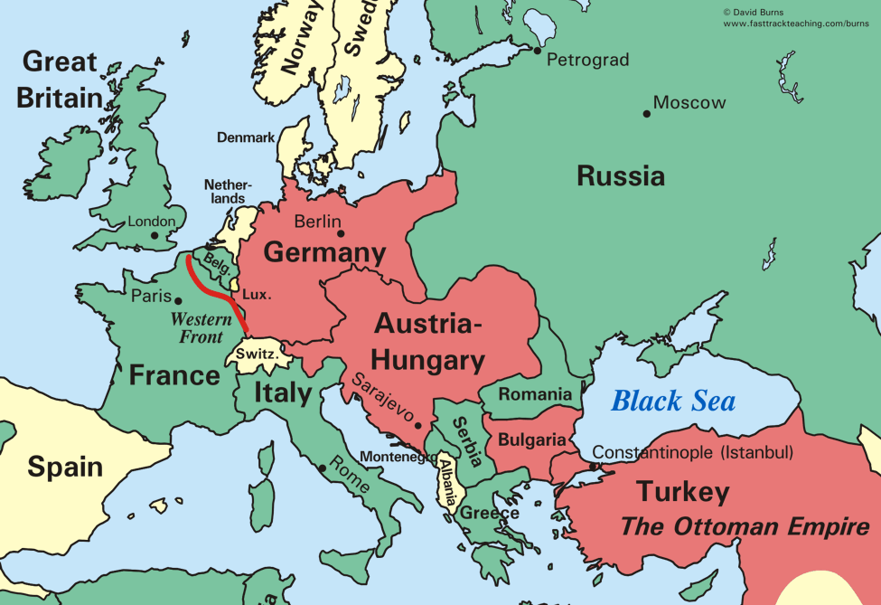

<!-- API: express, Firebase, mongoDB StandardQuery(For like & dislike system) -->
<!-- *Database: mongoDB
*API: Node.js
*Calling routs of API: Angular -->
<!-- LOOK AT UDEMY COURSE FOR NODE.JS (8/9/21) -->
<!-- Pick a framework and backend program to get a like/dislike system 
running. Make sure to have an 'admin' page/section for recording
the data! (8/3/21) -->
<!-- (10/4/21) Install Firebase tomorrow and get started on like system finally! -->

<ion-header [translucent]="true">
  <ion-toolbar>
    <ion-title>The Great War</ion-title>
    <ion-buttons slot="start">
      <ion-menu-button menu="main-menu"></ion-menu-button>
    </ion-buttons>
  </ion-toolbar>
</ion-header>

<ion-content>
  <!-- <strong>The Great War Info</strong> -->
  <ion-grid>
    <ion-row class="justify-content-center">
      <!-- <strong>The Great War Info</strong> -->
        <ion-col size="12" size-md="10" size-lg="7">
          <strong>The Great War Info</strong> 
          
        </ion-col>
        <!-- <ion-col class="ion-text-center">
            <strong>The Great War Info</strong>
        </ion-col> -->
    </ion-row>
  </ion-grid>
  <br>

  <!-- <ion-grid>
    <ion-row> -->
    <!-- List of Text Items -->
    <!-- <ion-list>
      <ion-item>
        <ion-label>Pokémon Yellow</ion-label>
      </ion-item>
      <ion-item>
        <ion-label>Mega Man X</ion-label>
      </ion-item>
      <ion-item>
        <ion-label>The Legend of Zelda</ion-label>
      </ion-item>
      <ion-item>
        <ion-label>Pac-Man</ion-label>
      </ion-item>
      <ion-item>
        <ion-label>Super Mario World</ion-label>
      </ion-item>
    </ion-list>
    </ion-row> -->
  <!-- </ion-grid> -->
</ion-content>
